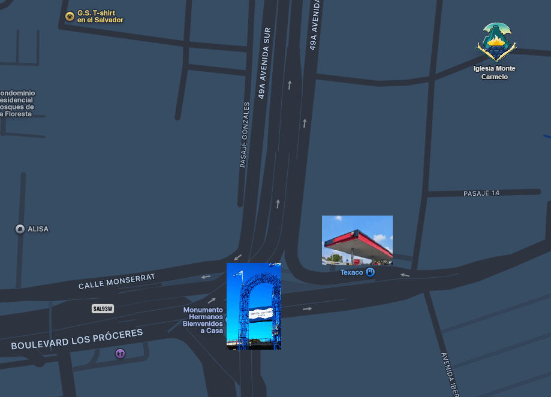
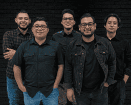

Ubicación


Como llegar
30 calle poniente #2427, Colonia Luz, San Salvador, El Salvador

Celebrando 15 años de: "Corazones de Fuego"
|
📍 Iglesia Monte Carmelo A.D |
|
🗓️ viernes 12 de junio |
|
🕗 7:30 P.M. - 10:30 P.M. |
|
🎫 Entrada Gratis |
Predicador invitado

Banda musical ministrando
Fundador de CDF y pastor de jovenes
30 calle poniente #2427, Colonia Luz, San Salvador, El Salvador
